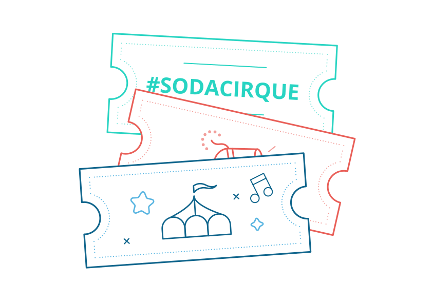

El espectáculo basado en la vida y la música de Soda Stereo se estrenará en Buenos Aires en marzo de 2017. El evento viene rodeado de un halo de secreto que lo torna aún más mágico, y hace que la ansiedad de los fanáticos y la expectativa por ver este show aumente día a día.
Las producciones del Cirque du Soleil inspiradas en la vida y la obra de referentes mundiales del rock y el pop tiene muy pocos antecedentes. De hecho esta gran agrupación circense con base en la ciudad canadiense de Montreal hizo apenas tres “espectáculos homenaje” basándose en la historia y la música de grandes íconos del rock y el pop. Sólo ocurrió con los referentes más grandes, los que mercaron una época e influyeron a generaciones enteras. Estamos hablando de Elvis Presley, de Los Beatles y de Michael Jackson. Y muy pronto hará lo propio con Soda Stereo, en lo que será el primer show con base latina del Cirque su Soleil. Esto habla a las claras del nivel de influencia y de la importancia clave que tuvo el trío argentino en la historia del rock en español, y también de su relieve como fenómeno cultural a nivel iberoamericano.
Cirque du Soleil estrenó el espectáculo The Beatles Love en 2006, presentándolo en un teatro especialmente construido en el casino y resort Mirage de las Vegas; este show de hecho continúa ofreciéndose como un espectáculo residente. Por su parte el show Viva Elvis se presentó también como una propuesta residente en el Aria Resort & Casino de Las Vegas; se estrenó en 2010 y cerró en 2012. Para el caso de Michael Jackson la agrupación circense ideó el espectáculo Michael Jackson THE IMMORTAL World Tour, que se presentó por vez primera en 2011 y se paseó por 141 ciudades del mundo con un total de 501 presentaciones. Y luego lanzó un segundo espectáculo en 2013, denominado Michael Jackson ONE, que continúa presentándose en el Mandalay Bay Resort and Casino de Las Vegas, de manera residente.
La de Soda Stereo será entonces la cuarta producción inspirada por la música de un grupo o solista destacado del Universo rock y pop. Y será la segunda producción de esta naturaleza pensada para girar por diversos países del planeta. “La secuencia Elvis, Los Beatles, Michael Jackson y ahora Soda Stereo es tremenda –dijo al respecto el bajista de Soda, Zeta Bosio, en un artículo periodístico-. Para nosotros es un sueño cumplido”.
Como no podía ser de otra manera, #Sodacirque se estrenará en Buenos Aires, la ciudad que vio nacer a la mítica banda de rock Soda Stereo, allá por el año 1982. La fecha prevista para el lanzamiento el show es marzo de 2017. El plan es que luego de las primeras presentaciones en suelo porteño, la producción gire por México, Chile, Colombia y Perú. También se anticipó que habrá fechas en Los Ángeles y Miami. De todas maneras es esperable que la lista de ciudades en las que se presentará #Sodacirque se amplíe.
#Sodacirque será el primer show de Cirque du Soleil que contará con una escena creada de manera conjunta con los fanáticos de un grupo musical (en este caso naturalmente de Soda Stereo). Para plasmarla el 9 de marzo de 2016 se convocó a la primera sesión creativa y abierta vía streaming desde Montreal a través de Facebook Mentions (una plataforma online colaborativa). Ese fue el primer paso para el diseño de la escena co-creada, para cuya elaboración se propusieron encuentros virtuales una vez por mes, coordinados por el director artístico del Cirque du Soleil, Michel Laprise. Mediante este esquema los fanáticos podrán ir haciendo su aporte de ideas, interactuando en las sesiones virtuales en tiempo real con el equipo creativo designado para “cranear” e inventar toda la magia que rodeará a #Sodacirque.
El diseño y desarrollo de #Sodacirque quedo en manos de un equipo de creativos del más alto nivel, que de hecho tuvo a su cargo alguna de las producciones más alabadas del gran Cirque Du Soleil. Ahora este equipo está pergeñando el espectáculo que se inspirará en la música –y también en la historia- de Soda Stereo. Varios de los creativos y técnicos que integran el plantel ya participaron en la gestación y puesta en marcha de los anteriores trabajos inspirados en las vidas y obras de grandes artistas: The Beatles LOVE y Michael Jackson The Inmortal Tour.
Jean Francois Bouchard será uno de los líderes en la parte de creación, y Charles Joron en la de producción; por otra parte el espectáculo contará con la dirección integral del canadiense Michel Laprise (quien entre otras mega producciones dirigió el tour MDNA de Madonna, más otros grandes trabajos del Cirque Du Soleil). Laprise estará muy bien secundado por la directora de creación Chantal Tremblay, y en la parte de vestuario la responsabilidad recaerá sobre Dominique Lemieux, quien ya se destacó en ese rol en varios de los shows más geniales del Cirque su Soleil, como Alegría, O, Corteo, La Nouba y Saltimbanco.
Hace más de dos años que la gente de Cirque du Soleil viene trabajando en secreto sobre este proyecto que se dio en llamar #Sodacirque. De hecho las primeras conversaciones tuvieron lugar a fines de 2013. En noviembre de 2015 el grupo creativo estuvo en Buenos Aires y se reunió con Zeta Bosio, Charly Alberti, la familia de Cerati y las productoras involucradas: la idea era ponerlos al tanto, conseguir su aprobación (cosa que sucedió de muy buen grado), revisar aspectos claves del show, avanzar con las ideas y comprender en toda su dimensión el fenómeno que representó Soda para todo el conjunto del rock español. También buscaban comprender el impacto cultural que tuvo el grupo musical argentino como fenómeno masivo que trascendió la Argentina para expandirse hacia toda Latinoamérica y también hacia el ambiente latino de los EE. UU.
Como es natural, el espectáculo #Sodacirque será liderado desde la producción por Cirque du Soleil. No obstante, contará con la coproducción de las firmas argentinas Pop Art y Triple (la productora de Soda).
Incluso antes de estrenarse, el espectáculo #Sodacirque está resultando muy movilizador para Zeta Bosio y Charly Alberti, los ex Soda sobrevivientes. En artículos periodísticos comentaron su emoción al tener que revisar la historia del grupo, que es la de sus propios sueños 30 años atrás. La familia de Gustavo Cerati también ha expresado su beneplácito al saber que la compañía de circo más famosa del mundo llevará a cabo esta maravillosa propuesta in titulada #Sodacirque.
Cirque du Soeil rodeará a la música y a la historia de Soda de toda su poética y de su arte, que como es sabido está plagado de maravillas coreográficas y destrezas físico-acrobáticas, en lo que será una inmersión circense y teatral en el universo creativo de Soda Stereo.
Pensar en #Sodacirque es recordar también que Soda Stéreo nació en 1982 y se disgregó en 1997. En el año 2007 tuvo un transitorio regreso triunfal, en el marco de una gira continental que incluyó 22 fantásticos conciertos en distintos países de Latinoamérica y en alguna que otra plaza estadounidense (Miami y Los Ángeles), durante los cuales convocó a más de 1 millón de fans. En su trayectoria musical el grupo dio a luz 7 increíbles álbumes de estudio: Soda Stereo (1984), Nada Personal (1985), Signos (1986), Doble Vida (1988), Canción Animal (1990), Dynamo (1992) y Sueño Stereo (1995). Además se editaron 5 álbumes en vivo, y un total de 17 recopilatorios.
Quien piensa en Soda Stereo piensa en creatividad, sensibilidad e innovación. Y quien piensa en Cirque su Soleil piensa en arte exquisito y mundos de ensueño. ¡Con lo cual la mesa estará servida para atestiguar un espectáculo alucinante!
Según trascendió, el espectáculo #Sodacirque tendrá una línea argumental que respetará de algún modo la historia de la evolución de Soda. No obstante, todo indica que en este show la compañía canadiense no se contentará con revisar la obra del genial trío argentino, sino que buscará reinterpretarla a través de un espectáculo circense con un fuerte componente teatral, como nos tiene acostumbrados el Cirque du Soleil. Por ello es prematuro tratar de inducir qué canciones elegirá para este espectáculo, o cómo presentará la historia del grupo y la pequeña gran revolución estético-musical que promovió con su arte.
Para los fans también será la ocasión de reencontrarse con distintos rastros sensibles y poéticos de Gustavo Cerati y rendirle un homenaje a un ser creativo excepcional a quien hoy se extraña y mucho, tras su muerte en septiembre de 2014, luego de padecer un ACV que lo dejó en situación de coma durante cuatro años.
Charly y Zeta se involucraron bastante en el proceso creativo de #Sodacirque, haciendo aportes para recrear la historia de la banda y la esencia de su propuesta artística: “Tratamos de transmitirles cada época, cuál era cada una de nuestras búsquedas, qué era lo que nos motivaba a hacer esas cosas. Y también les hablamos mucho de lo que es la gente, de la participación del público, de ese componente latino. Están tratando de comprender todo eso, porque están muy interesados en generar una obra que sea fiel a lo que Soda representó”, comentó Zeta en una nota periodística. Y agregó: “Hay mucha iconografía que hemos creado a lo largo de nuestra carrera y es importante marcarles cuáles son las cosas que la gente tomó e hizo parte de su vida. Los vamos conduciendo por el mundo de Soda, para que la obra no sea la música y algo ajeno. Que esté toda la emoción que nosotros generábamos y que se pueda reflejar en la obra”.
Obviamente tanto Alberti como Bosio destacaron que este show no implica ningún regreso del grupo, ya que al faltar Gustavo Cerati no se puede pensar en producir cosas nuevas. Pero en cambio de algún modo sí implica un regreso del espíritu de Soda, y una inmersión creativa en su historia y en las trazas imborrables que dejó tanto en términos culturales como musicales. Además Zeta y Charly trabajarán con antiguos materiales del grupo, remezclando y “limpiando” cintas; e incluso se anticipó que durante el show podrían escucharse algunas grabaciones inéditas. Esto será sin dudas impagable para los fans. Y para las nuevas generaciones será una ocasión de revisar una parte medular de la historia del rock nacional, que de alguna manera en el caso de Soda se resiste a quedar atrás y a ingresar en los canales del tiempo, como si todavía pugnara por reinventarse y relanzarse hacia el futuro.
Está claro que Soda nunca fue meramente un grupo de rock haciendo música. También proponía una estética y una escenografía en sus shows, es decir, todo un clima sensorial. Sus conciertos eran auténticos “happenings”. Seguramente la gente de Cirque du Soleil habrá tomado nota de esta impronta y revisitará el trabajo y la historia de Soda buscando captar ese clima y esas sensaciones únicas, para traducirlas y proponer una experiencia sensorial que reviva esa magia tan especial que proponía Soda.
Cirque du Soleil es una compañía de circo experta en esto de recrear mundos de ensueño. Soda con su música y su propuesta estética dejó una marca imborrable, signada por su impronta innovadora, creativa y sensible. Habrá que apaciguar un poco la ansiedad y esperar hasta marzo de 2017, que es cuando finalmente se concretará el estreno en la ciudad de Buenos Aires. Pero tal como se plantea la cosa, podemos confiar en que #Sodacirque nos llevará a revivir algo esencial de la experiencia única que representó la obra y la música de Soda Stereo.